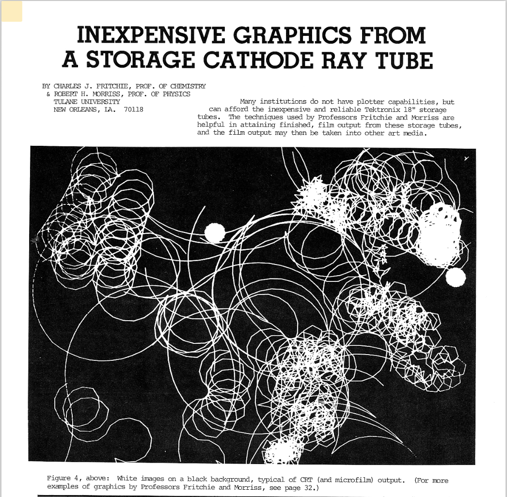
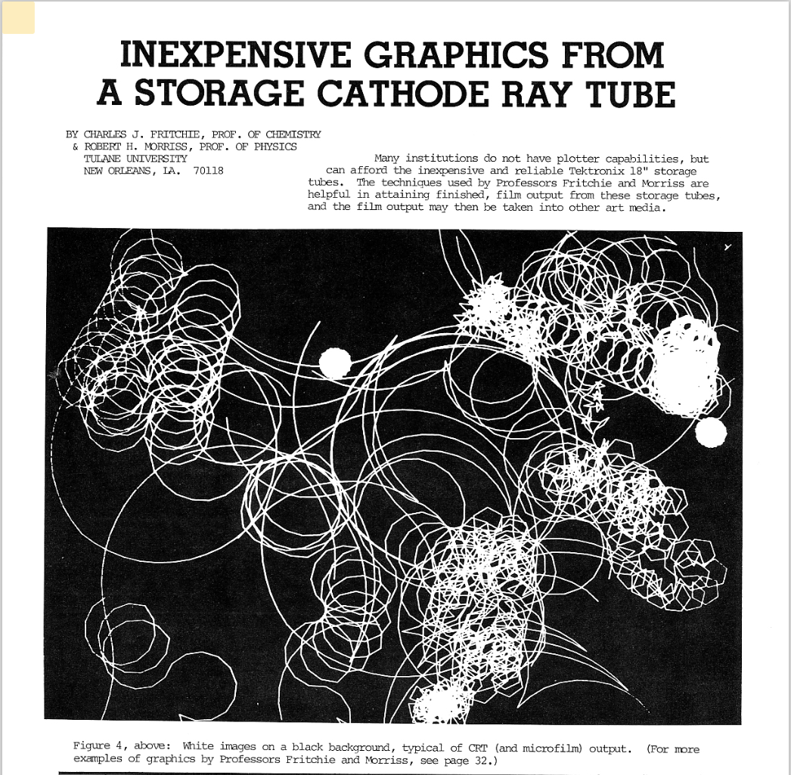

recreating retro computer art
with p5.js
by Sher Minn Chong / @piratefsh / EmpireJS 2018
Sher Minn
Malaysian

Recurse Center
Web Platform Engineer
Why recreate retro
computer art?
🤔
Recode Project

 

Grace C. Hertlein
Editor of Computer Graphics and Art, 1976-1978
no code shown -> can I reverse engineer it?
🤔🤔🤔
Computer art
any art in which computers play a role in production or display of the artwork
computer as a digital canvas

computers to generate graphics

machine learning art
Retro computer art
1950s to 1970s
(before personal computing, color screens, laser printers, 3D graphics)
Computers back then
🖥
IBM 7090
Data Processing System

introduced in 1959 at the price of USD 3 million
Featured in Hidden Figures, 2016

"I would write out what I wanted to be done, and then I would go to the computer center and look at the information and then type it out, resulting in the punched cards.
I'd give it to the little man behind the door, and five minutes later, I'd get this drawing back. I'd sit down and make a change and give it to him...
- Frederick Hammersley interviewed by Lawrence Weschler
What were they used for?
Scientific & mathematical applications
(practical and wonderful things)

Animation of human limbs to determine possible movements in cockpit for easier instrumentation reach
Source: The Computer in Art by Jasia Reichdart, 1971


Seattle-Tacoma airport graphic used for animation of landing simulations
Source: The Computer in Art by Jasia Reichdart, 1971
Coined term 'computer graphics'
🖼
One of the First Computer-Generated Films
Simulation of a Two-Gyro Gravity Gradient Attitude Control System by E. E. Zajac, 1963 [source]
Show me the vintage art
🎨🖌
Mathematical art
Cathode-ray oscilloscopes


Ben F. Laposky
pioneered oscilloscope art in 1950s-1960s

Various Oscillons [source]


early computer art was made by technical people
None of the negatives remain, much less the algorithms for them
😢
Demo: Oscillons
based on Processing
🙋🏻🙆🏽♂️💁👨🏿💻
designed to make drawing with code
accessible for non-programmers
 https://p5js.org/
https://p5js.org/
 in-browser p5.js editor -- good place to start
in-browser p5.js editor -- good place to start
Demo: Oscillons
Vector-based art
Mechanical plotter
Vera Molnar
made algorithmic art before computers were a thing in the 1960s

Distribution Aleatoire De 4 Elements (Pour Prog. Ordinateur) / Random Distribution of 4 Elements (for the computer), 1970 [source]

Quatre Éléments Distribués au Hasard, 1959.
Material: Adhesive film strips stuck on cardboard [source]
A la Recherche de Paul Klee, 1971.
Material: felt tip pen on paper [source]

A la Recherche de Paul Klee, 1970.
Material: ink on paper, plotter drawing [source]

Structures de quadrilatères (Square Structures) [source]

In preparation for Frieder [source]
towards the 70s, computers became more accessible to artists

144 Trapèzes (144 Trapeziums) [source]
demo
Text-based art

IBM 1403 line printer.
Source: The Computer in Art by Jasia Reichdart, 1971


IBM System/360 [source]
Frederick Hammersley
artist who got into programming

Equal Tea Talk, 1969 [source]
Undernourished, 1969 [source]

Jelly Centers, 1969 [source]

Jelly Centers Detail, 1969 [source]
ASCII art ?
not quite, more like EBCDIC art
(Extended Binary Coded Decimal Interchange Code)

Punched card with the EBCDIC character set.[source]

Family #2, 1973, Lithograph [source]

With English, 1975, Lithograph [source]
Demo: EBCDIC art
ART 1 Programming language
by Katherine Nash and Richard H. Williams at University of New Mexico
"...to teach students to make simple computer graphics"
"...notable for its simplicity and intended primarily as an introduction to the use of computers for those without any technological background"
source: The Computer in Art by Jasia Reichdart, 1971
ART I is a computer program that permits a person to assemble designs in each of two arrays. Each array is 105 columns by 50 rows. These designs as finally assembled in tha arrays are printed one over another using the computer's off-line printer.
compelling art made with limited technology
The value of computer art
Howard Wise Gallery
by Michael A Noll and Bela Julesz (IBM 7094, SC-4020)
April 1965

Source: Michael A. Noll, Leonardo, Volume 49, Number 3, 2016, pp. 232-239

Source: Michael A. Noll, Leonardo, Volume 49, Number 3, 2016, pp. 232-239

Source: Michael A. Noll, Leonardo, Volume 49, Number 3, 2016, pp. 232-239
...so far the means are of greater interest than the end, this revolutionary collaboration resulting in bleak, very complex geometrical patterns excluding the smallest ingredient of manual sensibility.
NY Times review of the first ever computer art exhibit in the US [source]

Exhibit celebrating 50 years
of computer art
at the V&A Museum in London